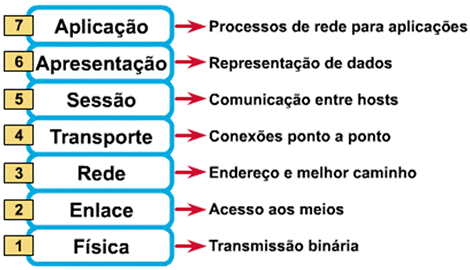
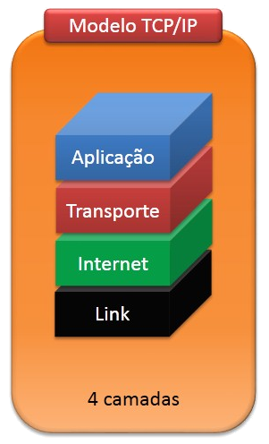
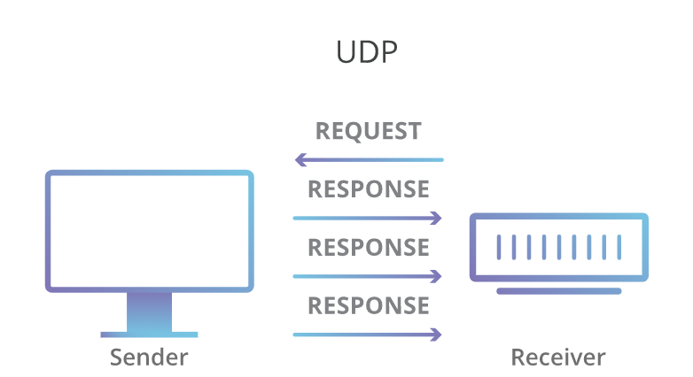
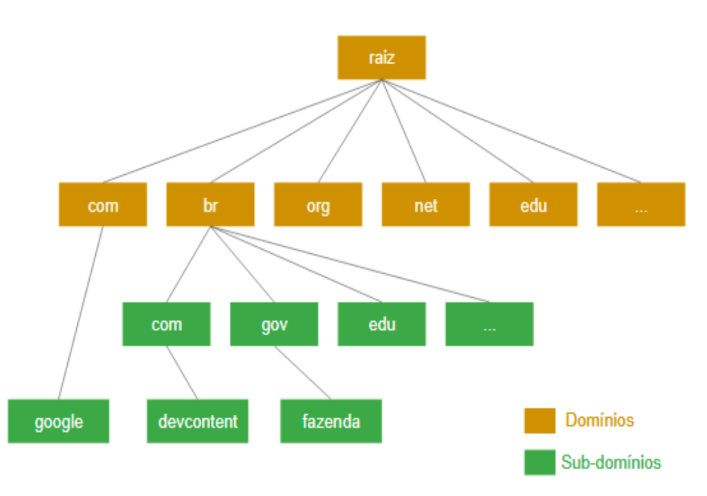
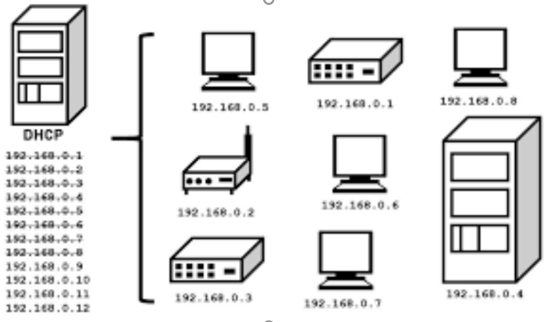
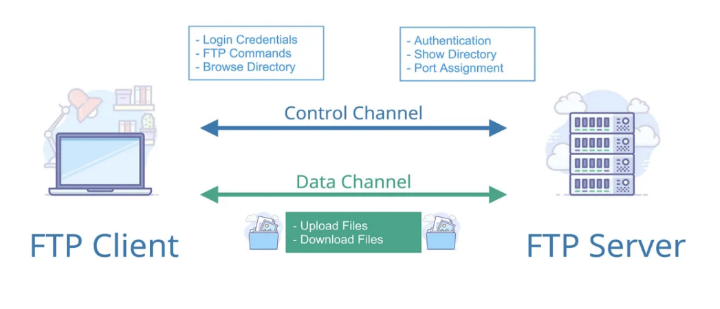
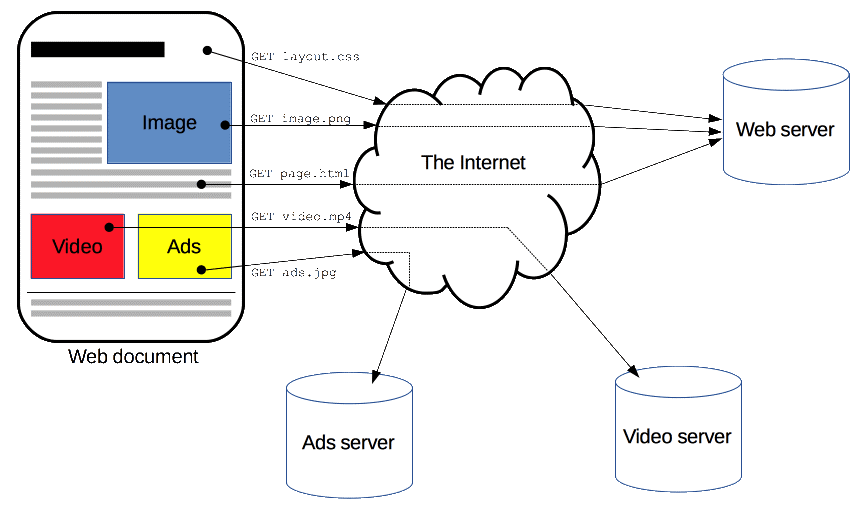
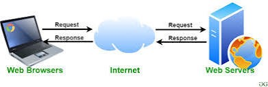

O modelo OSI é o primeiro modelo padrão de comunicação entre sistemas de computadores, ele é um modelo de interconexão de sistemas abertos (OSI), esse modelo divide a comunicação de redes em sete camadas que são usadas para identificar possíveis problemas na rede. Foi criado pela Organização Internacional de Normalização que permite a comunicação de diversos sistemas de comunicação usando protocolos padronizados. Ou seja, o modelo fornece um padrão para que diferentes sistemas de computadores possam se comunicar. Ele se baseia no conceito de dividir um sistema de comunicação em sete camadas abstratas, sendo elas:

Cada camada lida com uma tarefa específica e se comunica com as camadas acima e abaixo dela.
O TCP/IP é um conjunto de protocolos de comunicação entre computadores e servidores em rede que é dividido em 4 camadas, formando a Internet. O TCP/IP é o principal protocolo de envio e recebimento de dados, é o modelo atualmente mais utilizado. É um modelo de código aberto, o que facilita a comunicação entre redes distintas. Seu nome combina dois protocolos, o protocolo de controle de transmissão (TCP), que é responsável pela transmissão de dados, com o protocolo de Internet (IP), que identifica os computadores e servidores. Como dito anteriormente o modelo TCP/IP é dividido em 4 camadas, que são: de aplicação, de transporte, de internet/rede e de link de dados (ou enlace de dados). Elas trabalham em conjunto com objetivo de garantir a transferência íntegra de dados entre dois pontos da internet, cuidando de diferentes aspectos do processo de preparação e envio de dados em forma de pacotes.

UDP UDP (User Datagram Protocol) é um protocolo de comunicação na camada de transporte, é um protocolo muito comum utilizado para o tráfego de voz e vídeo. As principais características do UDP são: Diferente do TCP ele não é orientado à conexão; Não é confiável como o TCP, ele não garante a entrega completa dos dados; É preciso que dividamos manualmente os dados em datagramas (entidades de dados); Não garante a sequência da entrega, portanto, os dados podem chegar em uma ordem aleatória;

DNS (Domain Name System) é responsável pela decodificação de nomes dos domínios dos sites, permite acessar computadores sem que o usuário ou próprio computador tenha conhecimento de seu endereço IP, o modelo traduz nomes comuns para endereços IP e vice-versa, como por exemplo traduz 142.250.218.14 para www.google.com. Camadas de aplicação:

O protocolo DHCP (Dynamic Host Configuration Protocol) é um protocolo de cliente/servidor que fornece automaticamente um host IP (Protocolo de Internet) com seu endereço IP e outras informações de configuração relacionadas, como a máscara de sub-rede e o gateway padrão. OS RFCs 2131 e 2132 definem o DHCP como um padrão IETF (Internet Engineering Task Force) com base no BOOTP (Bootstrap Protocol), um protocolo com o qual o DHCP compartilha muitos detalhes de implementação. O DHCP permite que os hosts obtenham as informações de configuração TCP/IP necessárias de um servidor DHCP. Camada de aplicação:

FTP (File Transfer Protocol) é um protocolo de rede para a transmissão de arquivos entre computadores. Dentro do conjunto TCP/IP (Transmission Control Protocol/Internet Protocol), ele é um protocolo da camada de aplicação para o download e upload de arquivos em conexões do tipo cliente/servidor. Camada de aplicação:

HTTP (Hypertext Transfer Protocol) é um protocolo que permite a obtenção de recursos, como documentos HTML, é um protocolo projetados para a transferência de conteúdo. É a base de qualquer troca de dados na Web, isso significa que as requisições são iniciadas pelo destinatário. Um documento completo é reconstruído a partir dos diferentes sub-documentos obtidos, como por exemplo texto, descrição do layout, imagens, vídeos, scripts e muito mais. O HTTP é um dos protocolos de aplicativo mais usados. Todas as operações na Web utilizam o protocolo HTTP.

HTTPS (Hypertext Transfer Protocol Secure) surgiu como uma evolução ao protocolo antecessor o HTTP, a principal diferença entre eles é que o HTTPS possui uma camada a mais de segurança.
Web server é um sistema computacional que hospeda e fornece acesso aos conteúdos e aplicações através da internet. Geralmente contratado como um serviço, esse servidor recebe e processa as solicitações feitas por navegadores através de protocolos de rede como o HTTP ou HTTPS.
